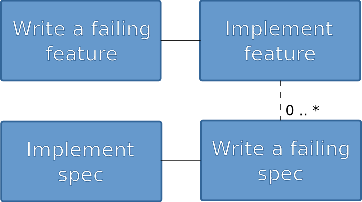

About me
- Software Developer
- Polyglot Programmer
Q: How many have heard of Cucumber
Q: How many are using RSpec
Q: How many have heard of RSpec
Q: How many are doing TDD/BDD?
Q: How many think I am asking too many questions?
My BDD history
- Java and Ruby developer
- TestDox, Joe Walnes
- Dan North
- Dave Astels, Aslak Hellesøy, David Chelimsky
$ rake
Finished in 27.79 seconds
285 examples, 0 failures
152 scenarios (152 passed)
1363 steps (1363 passed)
4m4.505s
Finished in 8.06 seconds
77 examples, 0 failures
Why automatic testing?
- Make sure it works now
- Make sure it works whenever
Why TDD?
- Make sure it works now
- Make sure it works whenever
- Know when you're done
Method Testing
class Klazz
def method
do_something
end
end
class KlazzTest
def setup
@klazz = Klazz.new
end
def test_method
result = @klazz.do_something
assert_equal("expected", result)
end
endThe Context Problem
class KlazzTest
def setup
@klazz = Klazz.new
end
def test_method
result = @klazz.do_something
assert_equal(:expected, result)
end
def test_another_context
klazz = Klazz.new(:constructor_args)
assert_equal(:expected_2, klazz.do_something)
end
endWhy BDD?
- Make sure it works now
- Make sure it works whenever
- Know when you're done
- Build just what's needed
- Design from functionality
- Documentation - why
What is BDD?
"BDD is TDD done right"
"TDD means 'write the test first'. BDD takes this idea to a more general level: 'write the client first' (the outside)"
- Aslak Hellesøy
The BDD Flow

$ rails new blog -T
create
create README
create Rakefile
create config.ru
create .gitignore
create Gemfile
create app
create app/controllers/application_controller.rb
...
create vendor/plugins/.gitkeep
source 'http://rubygems.org'
gem 'rails', '3.0.0'
gem 'sqlite3-ruby', :require => 'sqlite3'
group :test do
gem 'rspec-rails'
gem 'cucumber-rails'
gem 'capybara'
end$ bundle install ──master(Mon,Apr04)─┘
Fetching source index for http://rubygems.org/
Using rake (0.8.7)
...
Installing rack (1.2.2)
Installing rack-mount (0.6.14)
...
Installing gherkin (2.3.5) with native extensions
Installing term-ansicolor (1.0.5)
Installing cucumber (0.10.2)
Installing cucumber-rails (0.4.0)
...
Installing rspec (2.5.0)
Installing rspec-rails (2.5.0)
Using sqlite3 (1.3.3)
Using sqlite3-ruby (1.3.3)
$ rake db:migrate
$ rails generate cucumber:install
create config/cucumber.yml
create script/cucumber
chmod script/cucumber
create features/step_definitions
create features/step_definitions/web_steps.rb
create features/support
create features/support/paths.rb
create features/support/selectors.rb
create features/support/env.rb
exist lib/tasks
create lib/tasks/cucumber.rake
gsub config/database.yml
gsub config/database.yml
force config/database.yml
$ rails generate rspec:install ──master(Mon,Apr04)─┘
create .rspec
create spec
create spec/spec_helper.rb
Feature: User writes blog post
In order for other people to read brilliant thoughts
A user can post a blog post
Scenario:
Given I am on the new blog post page
When I write a blog post
And it has the title "My great Idea"
And it has the body "Body body body"
And I press "Save"
Then I should see "My great Idea"$ rake
1 scenario (1 failed)
6 steps (1 failed, 2 skipped, 3 undefined)
0m1.103s
You can implement step definitions for undefined steps with these snippets:
When /^I write a blog post$/ do
pending # express the regexp above with the code you wish you had
end
When /^it has the title "([^"]*)"$/ do |arg1|
pending # express the regexp above with the code you wish you had
end
When /^it has the body "([^"]*)"$/ do |arg1|
pending # express the regexp above with the code you wish you had
end$ rake
Given I am on the new blog post page # features/step_definitions/web_steps.rb:44
Can't find mapping from "the new blog post page" to a path.
Now, go and add a mapping in /home/mahnve/src/presentations/cucumber/src/blog/features/support/paths.rb (RuntimeError)
module NavigationHelpers
def path_to(page_name)
case page_name
when /the home\s?page/
'/'
when /the new blog post page/
'/blog_posts/new'$ rake
Scenario: # features/user_writes_blogpost.feature:6
Given I am on the new blog post page # features/step_definitions/web_steps.rb:44
No route matches "/blogpost/new" (ActionController::RoutingError)
$ rails generate resource BlogPost title:string body:string
invoke active_record
create db/migrate/20110404155134_create_blog_posts.rb
create app/models/blog_post.rb
invoke test_unit
create test/unit/blog_post_test.rb
create test/fixtures/blog_posts.yml
invoke controller
create app/controllers/blog_posts_controller.rb
invoke erb
create app/views/blog_posts
invoke test_unit
create test/functional/blog_posts_controller_test.rb
invoke helper
create app/helpers/blog_posts_helper.rb
invoke test_unit
create test/unit/helpers/blog_posts_helper_test.rb
route resources :blog_posts
$ rake
(in /home/mahnve/src/presentations/cucumber/src/blog)
You have 1 pending migrations:
20110404155134 CreateBlogPosts
class CreateBlogPosts < ActiveRecord::Migration
def self.up
create_table :blog_posts do |t|
t.string :title
t.string :body
t.timestamps
end
end
def self.down
drop_table :blog_posts
end
end$ rake db:migrate
(in /home/mahnve/src/presentations/cucumber/src/blog)
== CreateBlogPosts: migrating ================================================
-- create_table(:blog_posts)
-> 0.0010s
== CreateBlogPosts: migrated (0.0010s) =======================================
$ rake
Given I am on the new blog post page # features/step_definitions/web_steps.rb:44
The action 'new' could not be found for BlogPostsController (AbstractController::ActionNotFound)
gem 'inherited_resources'
class BlogPostsController < InheritedResources::Base
end$ rake
Missing template blog_posts/new with ...
gem 'formtastic'
gem 'haml'
- semantic_form_for @blog_post do |form|
= form.inputs
= form.buttons$ rake
Given I am on the new blog post page # features/step_definitions/web_steps.rb:44
When I write a blog post # features/step_definitions/blogpost_steps.rb:1
TODO (Cucumber::Pending)
./features/step_definitions/blogpost_steps.rb:2:in `/^I write a blog post$/'
Oops
- Steps where not really optimal
When /^I write a blog post with title "([^"]*)" and the body "([^"]*)"$/ do |title, body|
fill_in 'Title', :with => title
fill_in 'Body', :with => body
end
Given I am on the new blog post page
When I write a blog post with title "My great Idea" and body "Body body body"
And I press "Create Blog post"
Then I should see "My great Idea"$ rake
...
Missing template blog_posts/show
= @blog_post.title
Scenario: Create without title
Given I am on the new blog post page
When I write a blog post without a title
And I press "Create Blog post"
Then I should see "can't be blank"$ rake
Then I should see "Required" # features/step_definitions/web_steps.rb:105
expected #has_content?("Required") to return true, got false (RSpec::Expectations::ExpectationNotMetError)
require 'spec_helper'
describe BlogPost do
it {should validate_presence_of :title}
end
group :test, :development do
gem 'rspec-rails'
end
group :test do
gem 'cucumber-rails'
gem 'capybara'
gem 'database_cleaner'
gem 'shoulda-matchers'
end$ rake
1) BlogPost
Failure/Error: it {should validate_presence_of :title}
Expected errors to include "can't be blank" when title is set to nil, got no errors
class BlogPost < ActiveRecord::Base
validates_presence_of :title
end$ rake
.
Finished in 0.02658 seconds
1 example, 0 failures
2 scenarios (2 passed)
8 steps (8 passed)
0m1.084s
Java
package cukes;
import cuke4duke.annotation.I18n.EN.Given;
public class BlogPostSteps {
@Given("^I write a blog post with title \\"([^\\"]*)\\" and body \\"([^\\"]*)\\"$")
public void writeBlogPost (String title, String body) {
...
}
}Groovy
this.metaClass.mixin(cuke4duke.GroovyDsl)
Given(~/^I write a blog post with title "([^"]*)" and body "([^"]*)"$/) { String title, String body ->
...
}Thank You!